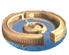
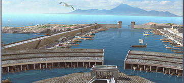

RTR: Imperium Surrectum
RTR: Imperium SurrectumPorts
4 levels, each replacing the one before it — you upgrade in place rather than building alongside.
Trade Port → Shipwright → Dockyard → The Cothon of Carthage
Levels at a glance
| Level | Cost | Build time | Minimum settlement | Upgrades to | Level | Cost | Build time | Minimum settlement | Upgrades to | ||
|---|---|---|---|---|---|---|---|---|---|---|---|
| Trade Port | 2,500 | 4 | town | Shipwright | Shipwright | 6,000 | 6 | city | Dockyard | ||
| Dockyard | 12,500 | 10 | large city | — |  | The Cothon of Carthage | 15,000 | 12 | large city | — |
Costs in denarii, build time in turns.
Trade Port

A port brings trade and wealth to a settlement, and allows the construction of simple ships. Access to the sea is vital for all long distance trade. The sea lanes are the true highways of the world, and carrying goods by ship is the only way to move them cheaply enough to make a profit. Indeed, it is usually cheaper and quicker to send a cargo halfway across the world by sea than to the next city in a cart!
Militarily, ports are important because they have the men and equipment needed to build a fleet.
Wording varies by culture: 3 versions of this description exist in the game files.
| Cost | 2,500 denarii | Build time | 4 turns | Minimum settlement | town | Upgrades to | Shipwright |
Requirements — all of these must hold before this level can be built.
- any faction
port- the region does not have the hidden resource
nobuild(nobuilding) - no building tagged
portis built or queued here (no_other_port) - Government Building
- the region has the hidden resource
base_port_level_1— or — the region has the hidden resourcebase_port_level_2— or — the region has the hidden resourcebase_port_level_3— or — the region has the hidden resourceharbour_constructed— or — the settlement is the AI's (port_level_tradingport)
Show the condition as the game files write it
factions { all, } and port and nobuilding and no_other_port and requires_gov and port_level_tradingport
What it does
Show 17 effects that apply only in the circumstances shown
- trade fleet of 1 — only when
disabling_in_winter - -1 trade income — only when
disabling_in_winter and hidden_resource rhodes factionwide and is_player - -8 taxable income — only when
disabling_in_winter and is_player and not resource timber and not resource pitch and not resource hemp - -4 taxable income — only when
disabling_in_winter and is_player and not resource timber and resource pitch and not resource hemp - -4 taxable income — only when
disabling_in_winter and is_player and not resource timber and not resource pitch and resource hemp - -4 taxable income — only when
disabling_in_winter and is_player and resource timber and not resource pitch and not resource hemp - -4 taxable income — only when
disabling_in_winter and is_player and not resource timber and resource pitch and resource hemp - -4 taxable income — only when
disabling_in_winter and is_player and resource timber and resource pitch and not resource hemp - -4 taxable income — only when
disabling_in_winter and is_player and resource timber and not resource pitch and resource hemp - -4 taxable income — only when
disabling_in_winter and is_player and resource timber and resource pitch and resource hemp - improves other weapons (1) — only when
timber_building_supply or hemp_building_supply or pitch_building_supply - +1 population growth — only when
disabling_in_winter and resource fish - Bardaxema is the western terminus of the wootz steel trade and can build iron exports without local iron or mines — only when
hidden_resource iron_trade_centre - Due to extreme climate this building's effects are disabled during winter — only when
not disabling_in_winter and is_player - Growth bonus is due to resource: fish — only when
disabling_in_winter and resource fish - Special attack bonus +1 from at least 1 of: timber, hemp, pitch — only when
timber_building_supply or hemp_building_supply or pitch_building_supply - Tax penalty due to maintenance costs reduced due to local: timber, hemp, pitch — only when
resource timber or resource pitch or resource hemp
Recruitment — unlocks 4 units. Which of them you can actually raise depends on your faction, your government and the region, exactly as the game files state it.
- Biremes (3 experience)
- Boats (3 experience)
- Large Boats (3 experience)
- Triremes (3 experience)
Shipwright

A shipwright can build the warships needed for a strong fleet, while the improved port facilities allow more goods to be landed at and forwarded from the settlement.
As a port grows wealth flows into the town, and all manner of goods become available to the people.
Militarily, the improvements in ship-building usually lead to better ship-handling and tactics.
Wording varies by culture: 3 versions of this description exist in the game files.
| Cost | 6,000 denarii | Build time | 6 turns | Minimum settlement | city | Upgrades to | Dockyard |
Requirements — all of these must hold before this level can be built.
- any faction
port- the region does not have the hidden resource
nobuild(nobuilding) - no building tagged
portis built or queued here (no_other_port) - Government Building
- the region has the hidden resource
base_port_level_2— or — the region has the hidden resourcebase_port_level_3— or — the region has the hidden resourceharbour_constructedand the region has the hidden resourcebase_port_level_1— or — the region has the hidden resourcebase_port_level_1and the settlement is the AI's (port_level_shipwright)
Show the condition as the game files write it
factions { all, } and port and nobuilding and no_other_port and requires_gov and port_level_shipwright
What it does
Show 31 effects that apply only in the circumstances shown
- trade fleet of 2 — only when
disabling_in_winter and is_player or homeland or hidden_resource capital - trade fleet of 1 — only when
not is_player and not homeland and not hidden_resource capital - -2 trade income — only when
disabling_in_winter and hidden_resource rhodes factionwide and is_player - -14 taxable income — only when
disabling_in_winter and is_player and not resource timber and not resource pitch and not resource hemp - -7 taxable income — only when
disabling_in_winter and is_player and not resource timber and resource pitch and not resource hemp - -7 taxable income — only when
disabling_in_winter and is_player and not resource timber and not resource pitch and resource hemp - -7 taxable income — only when
disabling_in_winter and is_player and resource timber and not resource pitch and not resource hemp - -7 taxable income — only when
disabling_in_winter and is_player and not resource timber and resource pitch and resource hemp - -7 taxable income — only when
disabling_in_winter and is_player and resource timber and resource pitch and not resource hemp - -7 taxable income — only when
disabling_in_winter and is_player and resource timber and not resource pitch and resource hemp - -7 taxable income — only when
disabling_in_winter and is_player and resource timber and resource pitch and resource hemp - improves other weapons (1) — only when
timber_building_supply and not hemp_building_supply and not pitch_building_supply - improves other weapons (1) — only when
not timber_building_supply and not hemp_building_supply and pitch_building_supply - improves other weapons (1) — only when
not timber_building_supply and hemp_building_supply and not pitch_building_supply - improves other weapons (2) — only when
timber_building_supply and hemp_building_supply and not pitch_building_supply - improves other weapons (2) — only when
timber_building_supply and pitch_building_supply and not hemp_building_supply - improves other weapons (2) — only when
hemp_building_supply and pitch_building_supply and not timber_building_supply - improves other weapons (2) — only when
hemp_building_supply and pitch_building_supply and timber_building_supply - +1 population growth — only when
disabling_in_winter and resource fish - Massalia and Gades are the great transit ports of the western tin trade and can build tin exports without local tin or mines — only when
hidden_resource tin_trade_centre - Bardaxema is the western terminus of the wootz steel trade and can build iron exports without local iron or mines — only when
hidden_resource iron_trade_centre - Due to extreme climate this building's effects are disabled during winter — only when
not disabling_in_winter and is_player - Growth bonus is due to resource: fish — only when
disabling_in_winter and resource fish - Special attack bonus +1 from at least 1 of: timber, hemp, pitch — only when
timber_building_supply and not hemp_building_supply and not pitch_building_supply - Special attack bonus +1 from at least 1 of: timber, hemp, pitch — only when
not timber_building_supply and not hemp_building_supply and pitch_building_supply - Special attack bonus +1 from at least 1 of: timber, hemp, pitch — only when
not timber_building_supply and hemp_building_supply and not pitch_building_supply - Special attack bonus +2 from at least 2 of: timber, hemp, pitch — only when
timber_building_supply and hemp_building_supply and not pitch_building_supply - Special attack bonus +2 from at least 2 of: timber, hemp, pitch — only when
timber_building_supply and pitch_building_supply and not hemp_building_supply - Special attack bonus +2 from at least 2 of: timber, hemp, pitch — only when
hemp_building_supply and pitch_building_supply and not timber_building_supply - Special attack bonus +2 from at least 2 of: timber, hemp, pitch — only when
hemp_building_supply and pitch_building_supply and timber_building_supply - Tax penalty due to maintenance costs reduced due to local: timber, hemp, pitch — only when
disabling_in_winter and is_player and resource timber or resource pitch or resource hemp
Recruitment — unlocks 5 units. Which of them you can actually raise depends on your faction, your government and the region, exactly as the game files state it.
- Biremes (3 experience)
- Boats (3 experience)
- Large Boats (3 experience)
- Quinquiremes (3 experience)
- Triremes (3 experience)
Dockyard

A Dockyard has the equipment and skilled craftsmen needed to construct the largest and most advanced warships afloat, while the port can speedily handle many merchant vessels.
The city's merchants can easily send their cargoes to any port in the world, adding greatly to the wealth of the city and in return exotic goods from all over the world pass through the docks.
The Dockyard can produce any warship required by the fleet, and even provide the crews of slave rowers required by these large and powerful ships.
Wording varies by culture: 3 versions of this description exist in the game files.
| Cost | 12,500 denarii | Build time | 10 turns | Minimum settlement | large city |
Requirements — all of these must hold before this level can be built.
- your faction is one of 15 factions, listed in the condition below
port- the region does not have the hidden resource
nobuild(nobuilding) - no building tagged
portis built or queued here (no_other_port) - Government Building
- the region has the hidden resource
base_port_level_3— or — the region has the hidden resourceharbour_constructedand the region has the hidden resourcebase_port_level_2— or — the region has the hidden resourcebase_port_level_2and the settlement is the AI's (port_level_dockyard)
Show the condition as the game files write it
factions { carthaginian, iberian, libyan, eastern, arab, ethiopian, indian, anatolian, iranian, greek, w_hellenistic, e_hellenistic, roman, illyrian, egyptian, } and port and nobuilding and no_other_port and requires_gov and port_level_dockyard
What it does
Show 32 effects that apply only in the circumstances shown
- trade fleet of 3 — only when
is_player or homeland or hidden_resource capital - trade fleet of 2 — only when
not is_player and not homeland and not hidden_resource capital - +5 trade income — only when
not is_player and not hidden_resource rhodes factionwide and not homeland and not hidden_resource capital - -2 trade income — only when
disabling_in_winter and hidden_resource rhodes factionwide and is_player - -18 taxable income — only when
disabling_in_winter and is_player and not resource timber and not resource pitch and not resource hemp - -9 taxable income — only when
disabling_in_winter and is_player and not resource timber and resource pitch and not resource hemp - -9 taxable income — only when
disabling_in_winter and is_player and not resource timber and not resource pitch and resource hemp - -9 taxable income — only when
disabling_in_winter and is_player and resource timber and not resource pitch and not resource hemp - -9 taxable income — only when
disabling_in_winter and is_player and not resource timber and resource pitch and resource hemp - -9 taxable income — only when
disabling_in_winter and is_player and resource timber and resource pitch and not resource hemp - -9 taxable income — only when
disabling_in_winter and is_player and resource timber and not resource pitch and resource hemp - -9 taxable income — only when
disabling_in_winter and is_player and resource timber and resource pitch and resource hemp - improves other weapons (1) — only when
timber_building_supply and not hemp_building_supply and not pitch_building_supply - improves other weapons (1) — only when
not timber_building_supply and not hemp_building_supply and pitch_building_supply - improves other weapons (1) — only when
not timber_building_supply and hemp_building_supply and not pitch_building_supply - improves other weapons (2) — only when
timber_building_supply and hemp_building_supply and not pitch_building_supply - improves other weapons (2) — only when
timber_building_supply and pitch_building_supply and not hemp_building_supply - improves other weapons (2) — only when
hemp_building_supply and pitch_building_supply and not timber_building_supply - improves other weapons (3) — only when
timber_building_supply and hemp_building_supply and pitch_building_supply - +1 population growth — only when
disabling_in_winter and resource fish - Massalia and Gades are the great transit ports of the western tin trade and can build tin exports without local tin or mines — only when
hidden_resource tin_trade_centre - Bardaxema is the western terminus of the wootz steel trade and can build iron exports without local iron or mines — only when
hidden_resource iron_trade_centre - Due to extreme climate this building's effects are disabled during winter — only when
not disabling_in_winter and is_player - Growth bonus is due to resource: fish — only when
disabling_in_winter and resource fish - Special attack bonus +1 from at least 1 of: timber, hemp, pitch — only when
timber_building_supply and not hemp_building_supply and not pitch_building_supply - Special attack bonus +1 from at least 1 of: timber, hemp, pitch — only when
not timber_building_supply and not hemp_building_supply and pitch_building_supply - Special attack bonus +1 from at least 1 of: timber, hemp, pitch — only when
not timber_building_supply and hemp_building_supply and not pitch_building_supply - Special attack bonus +2 from at least 2 of: timber, hemp, pitch — only when
timber_building_supply and hemp_building_supply and not pitch_building_supply - Special attack bonus +2 from at least 2 of: timber, hemp, pitch — only when
timber_building_supply and pitch_building_supply and not hemp_building_supply - Special attack bonus +2 from at least 2 of: timber, hemp, pitch — only when
hemp_building_supply and pitch_building_supply and not timber_building_supply - Special attack bonus +3 from all 3: timber and hemp and pitch — only when
timber_building_supply and hemp_building_supply and pitch_building_supply - Tax penalty due to maintenance costs reduced due to local: timber, hemp, pitch — only when
disabling_in_winter and is_player and resource timber or resource pitch or resource hemp
Recruitment — unlocks 5 units. Which of them you can actually raise depends on your faction, your government and the region, exactly as the game files state it.
- Biremes (3 experience)
- Boats (3 experience)
- Large Boats (3 experience)
- Quinquiremes (3 experience)
- Triremes (3 experience)
The Cothon of Carthage

A unique Dockyard suitable for a sea-trading empire
Carthage is one of the greatest ports in the known world and it shows. Its protected harbour is the envy of any sea-faring people. The rectangular outer harbour is protected by a seawall with only a narrow opening for ships to pass, this opening can be closed with a boom if needed. This large, well equipped, outer harbour is used for trading vessels.
The circular inner harbour used for Carthage's navy is even more impressive, only accessible from the outer harbour and through another easily defensible opening it safely harbour Punic naval might. In the centre there is an island that houses the admirals headquarters, while all along the island and the outer ring of the harbour war galleys can be stored in sheds, with slipways allowing them to put to sea whenever needed. Above these sheds are warehouses holding enormous stores of naval equipment.
| Cost | 15,000 denarii | Build time | 12 turns | Minimum settlement | large city |
Requirements — all of these must hold before this level can be built.
- your faction is one of
carthaginian port- the region does not have the hidden resource
nobuild(nobuilding) - no building tagged
portis built or queued here (no_other_port) - Government Building
- the region has the hidden resource
base_port_level_3— or — the region has the hidden resourceharbour_constructedand the region has the hidden resourcebase_port_level_2— or — the region has the hidden resourcebase_port_level_2and the settlement is the AI's (port_level_dockyard) - the region has the hidden resource
unbuildable
Show the condition as the game files write it
factions { carthaginian, } and port and nobuilding and no_other_port and requires_gov and port_level_dockyard and hidden_resource unbuildable
What it does
- trade fleet of 3 (player only)
- -12 taxable income (player only)
Show 29 effects that apply only in the circumstances shown
- +2 trade income — only when
factions { carthaginian, } and not tin_building_supply and not purple_dye_building_supply - +3 trade income — only when
factions { carthaginian, } and tin_building_supply and not purple_dye_building_supply - +3 trade income — only when
factions { carthaginian, } and not tin_building_supply and purple_dye_building_supply - +4 trade income — only when
factions { carthaginian, } and tin_building_supply and purple_dye_building_supply - trade fleet of 3 — only when
not is_player and homeland and not hidden_resource capital - trade fleet of 3 — only when
not is_player and not homeland and hidden_resource capital - trade fleet of 3 — only when
not is_player and homeland and hidden_resource capital - trade fleet of 2 — only when
not is_player and not homeland and not hidden_resource capital - +5 trade income — only when
not is_player and not hidden_resource rhodes factionwide and not homeland and not hidden_resource capital - -2 trade income — only when
disabling_in_winter and hidden_resource rhodes factionwide and is_player - improves other weapons (1) — only when
timber_building_supply and not hemp_building_supply and not pitch_building_supply - improves other weapons (1) — only when
not timber_building_supply and not hemp_building_supply and pitch_building_supply - improves other weapons (1) — only when
not timber_building_supply and hemp_building_supply and not pitch_building_supply - improves other weapons (2) — only when
timber_building_supply and hemp_building_supply and not pitch_building_supply - improves other weapons (2) — only when
timber_building_supply and pitch_building_supply and not hemp_building_supply - improves other weapons (2) — only when
hemp_building_supply and pitch_building_supply and not timber_building_supply - improves other weapons (3) — only when
timber_building_supply and hemp_building_supply and pitch_building_supply - No additional trade bonus due to lack of supplied tin and purple dye — only when
factions { carthaginian, } and not tin_building_supply and not purple_dye_building_supply - Additional trade bonus due to resource supplied: tin or purple dye (gain the other one for a stacking bonus) — only when
factions { carthaginian, } and tin_building_supply and not purple_dye_building_supply - Additional trade bonus due to resource supplied: tin or purple dye (gain the other one for a stacking bonus) — only when
factions { carthaginian, } and not tin_building_supply and purple_dye_building_supply - Additional trade bonus due to both resource supplied: tin and purple dye — only when
factions { carthaginian, } and tin_building_supply and purple_dye_building_supply - Special attack bonus +1 from at least 1 of: timber, hemp, pitch — only when
timber_building_supply and not hemp_building_supply and not pitch_building_supply - Special attack bonus +1 from at least 1 of: timber, hemp, pitch — only when
not timber_building_supply and not hemp_building_supply and pitch_building_supply - Special attack bonus +1 from at least 1 of: timber, hemp, pitch — only when
not timber_building_supply and hemp_building_supply and not pitch_building_supply - Special attack bonus +2 from at least 2 of: timber, hemp, pitch — only when
timber_building_supply and hemp_building_supply and not pitch_building_supply - Special attack bonus +2 from at least 2 of: timber, hemp, pitch — only when
timber_building_supply and pitch_building_supply and not hemp_building_supply - Special attack bonus +2 from at least 2 of: timber, hemp, pitch — only when
hemp_building_supply and pitch_building_supply and not timber_building_supply - Special attack bonus +3 from all 3: timber and hemp and pitch — only when
timber_building_supply and hemp_building_supply and pitch_building_supply - Tax penalty due to maintenance costs reduced due to local: timber, hemp, pitch — only when
disabling_in_winter and is_player and resource timber or resource pitch or resource hemp
Recruitment — unlocks 5 units. Which of them you can actually raise depends on your faction, your government and the region, exactly as the game files state it.
- Biremes (3 experience)
- Boats (3 experience)
- Large Boats (3 experience)
- Quinquiremes (3 experience)
- Triremes (3 experience)
What the shorthands in those conditions stand for (14)
| Shorthand | Stands for | Shorthand | Stands for | Shorthand | Stands for | Shorthand | Stands for |
|---|---|---|---|---|---|---|---|
disabling_in_winter | not_extreme_cold or not major_event "winter" | hemp_building_supply | resource hemp or hidden_resource hemp_supply_built factionwide | homeland | any one of 221 alternatives — too long to quote here | no_other_port | no_building_tagged port queued |
nobuilding | not hidden_resource nobuild | not_extreme_cold | not hidden_resource sub_artic and not hidden_resource alpine | pitch_building_supply | resource pitch or hidden_resource pitch_supply_built factionwide | port_level_dockyard | hidden_resource base_port_level_3 or hidden_resource harbour_constructed and hidden_resource base_port_level_2 or hidden_resource base_port_level_2 and not is_player |
port_level_shipwright | hidden_resource base_port_level_2 or hidden_resource base_port_level_3 or hidden_resource harbour_constructed and hidden_resource base_port_level_1 or hidden_resource base_port_level_1 and not is_player | port_level_tradingport | hidden_resource base_port_level_1 or hidden_resource base_port_level_2 or hidden_resource base_port_level_3 or hidden_resource harbour_constructed or not is_player | purple_dye_building_supply | resource purple_dye or hidden_resource purple_dye_supply_built factionwide | requires_gov | building_present governmentA or building_present governmentB or building_present governmentC or building_present governmentD or not is_player |
timber_building_supply | resource timber or hidden_resource timber_supply_built factionwide | tin_building_supply | resource tin or hidden_resource tin_supply_built factionwide |